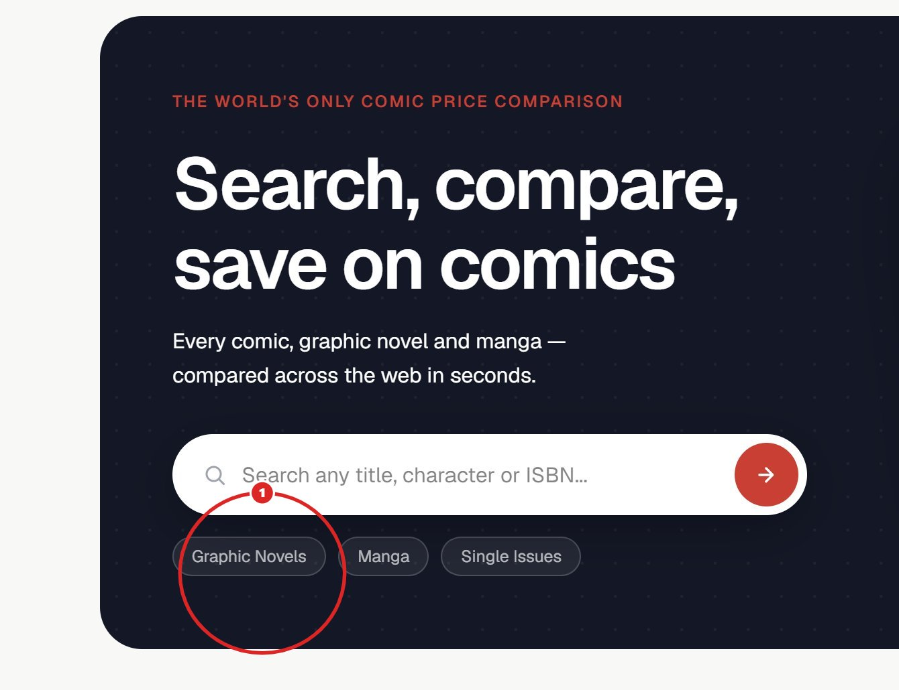

Downloads/catch-comics-smoke-test-master-report.html (section 07) and is archived to launch/evidence/cc-020-img-15.jpg. A backup of the current session is stored under cc-smoke-test-v3-backup-20260713-cc020 before anything changes. Idempotent — safe to open more than once.
What this changes: CC-020 is not an affiliate defect. The screenshot shows the homepage hero; the callout targets the “Graphic Novels” chip; the fragment “to say comic” is a copy note about that chip's label (most plausible reading: it should say “Comics”). It was filed under Affiliate Systems only because that section was active in the tester when it was captured. The affiliate system itself passed its full checklist 10/10 in the same session (/go/ → awin1.com chain, mid/affid/clickref/ued all verified).
Severity: P0 → P2. A chip-label wording nit is the same class as CC-006 / CC-011 / CC-017 (visual polish, not collector-trust-critical). It inherited P0 from the revenue-critical section it was logged under, not from its content.
Deliberately NOT done: no copy change has shipped. “To say comic” is still a fragment — the exact wording is yours to confirm (the chips live in app/page.tsx, both hero variants). Wrong data is worse than missing data; guessing your intent and shipping it would be wrong data.